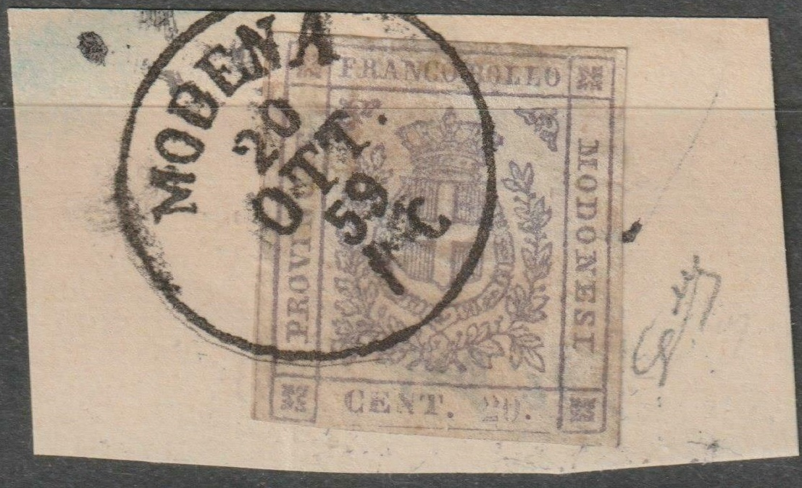
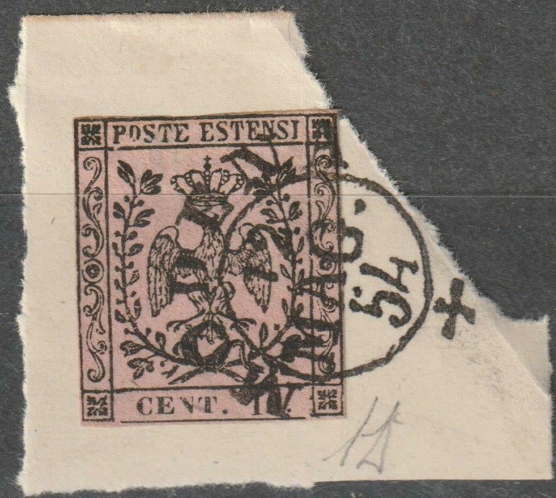
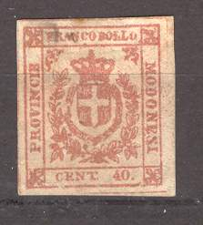
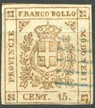
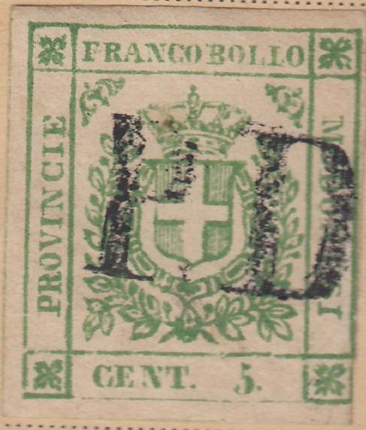
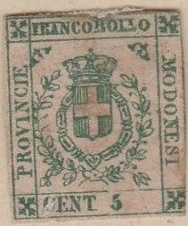
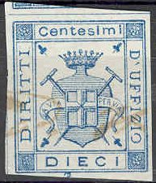

Return To Catalogue - Modena 1859 issue, reprints and Spiro/Founier forgeries - Modena (Italy) 1852 issue - Modena 1859 newspaper stamp - Italy
Note: on my website many of the
pictures can not be seen! They are of course present in the
catalogue;
contact me if you want to purchase the catalogue.
5 c green 15 c brown 20 c grey 40 c red 80 c orange (brown)
Stamps with errors in the value panel exist.
Value of the stamps |
|||
vc = very common c = common * = not so common ** = uncommon |
*** = very uncommon R = rare RR = very rare RRR = extremely rare |
||
| Value | Unused | Used | Remarks |
| 5 c | RR | RRR | |
| 15 c | RR | RRR | |
| 20 c | R | RRR | |
| 40 c | RR | RR | |
| 80 c | RR | RRR | |
Cancelled stamps:


I've been told that this cancel 'CASTELNUOVO CARFAGNANA' in a box
is genuine
These stamps were only valid for a few months, be aware of genuine stamps with fake cancels! According to Lorenzo less than 20 used stamps of the 80 c are known to exist on envelope.


Genuine 80 c stamps stamp with forged cancels
(Probably a forged cancel)
 
A 20 c with a "MODENA 20 OTT 59 1 C" cancel which is
taken from the Sassone catalogue. Also a very suspicious
"MODENA" cancel with date "12 MAG. 54". This
also looks like two drops of water to the illustration of this
cancel in the Sassone catalogue (with exactly the same date!),
most likely originating from the same source.
Modena 1859 issue, reprints and Spiro/Founier forgeries, click here
Forgery detection: the line at the bottom of the stamp does not touch the frame on either side in the genuine stamps.





The above forgeries are the first ones described in 'Album Weeds'. These forgeries are very blotched, the top of the crown points to the left side of the "O" of "FRANCO" (it should point to the right side). The crosses in the corners are much too large. There is a very small dot behind "CENT" in these forgeries (except for the 5 c?).
(Forgery with inscription 'MODENESI')
Among various forgeries, a forgery exists with wrong inscription "MODENESI" (only one "O") instead of "MODONESI" (see image above). The above stamp is the fourth forgery described in Album Weeds.
(Forgery)


Two of these forgeries and one of the previous set on a forged
letter.


The line at the bottom of the stamp is continuous in the above
forgeries. The leaf pattern is also different.

(Another forgery, also with continuous line at the bottom of the
stamp, I've also seen this forgery with a 'PD' cancel in a double
outlined box)
I've been told that the next stamp is a forgery as well:

Other stamps that I don't trust: there is an extra outline around the stamps:
Note, that in the above forgery, the design can be seen at the backside of the stamps.



(Other forgeries, note the strange concentric ring cancels)
Forgery of the 20c, 40 c and 80 c, made by the same forger
The leave in the lower left corner seems to be hanging more downwards than in the genuine stamps in the above forgeries. The words "FRANCO BOLLO" are placed too low. Besides the 5 c and 15 c values I have also seen the 20 c blue, 20 c lilac (bogus) 40 c and 80 c of this particular forgery. They always seem to have either the cancel "PD" or the 'concentric rings' cancel as shown above.

(Very blur stamp, probably a forgery, the cancel consists of
dots)


Some other forgeries of the 5 c, 15 c and 80 c, made by the same
forger. Note that the leaves in the lower right corner are
pointed.

5 c and 80 c forgery with "CENT" too far to the left

Forgery with a very large pearl on top of the crown

Another forgery of the 20 c value

And yet another forgery.

Highly dubious item. A similar stamp is shown on
http://forgeriesofitalianstates.com/Modena/Modena.htm, where it
is identified as a forgery. The printing is very blur and there
is an extra line below the stamp.

Stamp with double dot behind "15", most likely a
forgery.
Another forgery exists with inscription "DOLLO" instead of "BOLLO", I have not seen this forgery.
For Modena 1859 newspaper stamp, click here.

I don't know where this cancel was used for. The text reads "R.D. DISTRIBUZIONE POSTALE REGGIO". I have seen similar cancels in red and black with inscription "MODENA" instead of "REGGIO" and with a slightly different design of the eagle.



{kind=link}
{kind=link}
{kind=link}
{kind=link}
{kind=link}